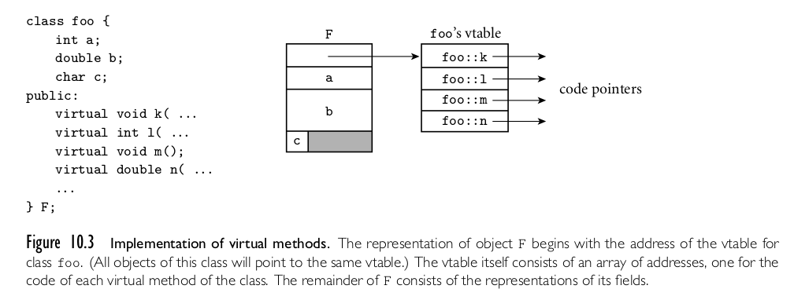
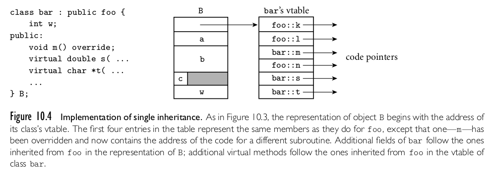

Created: 2024-10-08 mar 10:55
package Stack_Pack is
type stack_type is limited private;
max_size: constant := 100;
function empty(stk: in stack_type) return Boolean;
procedure push(stk: in out stack_type; elem:in Integer);
procedure pop(stk: in out stack_type);
function top(stk: in stack_type) return Integer;
private -- hidden from clients
type list_type is array (1..max_size) of Integer;
type stack_type is record
list: list_type;
topsub: Integer range 0..max_size) := 0;
end record;
end Stack_Pack
class stack {
private:
int *stackPtr, maxLen, topPtr;
public:
stack() { // a constructor
stackPtr = new int [100];
maxLen = 99;
topPtr = -1;
};
~stack () {delete [] stackPtr;};
void push (int num) {…};
void pop () {…};
int top () {…};
int empty () {…};
}
class StackClass {
private:
private int [] *stackRef;
private int [] maxLen, topIndex;
public StackClass() { // a constructor
stackRef = new int [100];
maxLen = 99;
topPtr = -1;
};
public void push (int num) {...};
public void pop () {...};
public int top () {...};
public boolean empty () {...};
}
generic
Max_size: Positive;
type Elem_Type is Private;
package Generic_Stack is
…
function Top(Stk: in out StackType) return Elem_type;
…
end Generic_Stack;
Package Integer_Stack is new Generics_Stack(100,Integer);
Package Float_Stack is new Generics_Stack(100,Float);
template <class type>
class stack {
…
stack (int size) {
stk_ptr = new int [size];
max_len = size - 1;
top = -1;
};
…
}
stack stk(100);
#includefunctor/atom en los datos son
compartidos (Al menos por defecto).multifile/1) pueden ser
definidos por Cláusulas distribuidas en varios módulos, y todos los módulos quedefinen el predicado como multifile puede utilizar ese predicado.
importwith

class base_class {
private:
int a;
float x;
protected:
int b;
float y;
public:
int c;
float z;
};
class subclass_1 : public base_class { … };
// In this one, b and y are protected and
// c and z are public
class subclass_2 : private base_class { … };
// In this one, b, y, c, and z are private,
// and no derived class has access to any
// member of base_class
class subclass_3 : private base_class {
base_class :: c;
…
}
newfinalize se llama implícitamente cuando el recolector
de basura está a punto de recuperar el almacenamiento ocupado por
el objetointerface)interface puede incluir sólo declaraciones de método y
constantes nombradas, por ejemplo,public interface Comparable {
public int comparedTo (Object b);
}
final (no se pueden sobreescribir)final (es decir, no se puede
sobreescribir, por lo que el enlazado dinámico no sirve para nada)interface para proporcionar una forma simple de soporte para herencia múltiple:- class(stack,[],[]).
:- dynamic storage/1.
% Interface declaration: the following predicates will
% be available at run-time.
:- export(push/1).
:- export(pop/1).
:- export(top/1).
:- export(is_empty/0).
% Methods
push(Item) :-
nonvar(Item),
asserta_fact(storage(Item)).
pop(Item) :-
var(Item),
retract_fact(storage(Item)).
top(Top) :-
storage(Top), !.
is_empty :-
storage(_), !, fail.
is_empty.
?- use_package(objects).
yes
?- use_class(library(class/examples/stack)).
yes
?-
?- St1 new stack,St2 new stack.
St1 = stack('9254074093385163'),
St2 = stack('9254074091') ? ,
1 ?- St1:push(8),St2:push(9).
St1 = stack('9254074093385163'),
St2 = stack('9254074091') ?
yes
1 ?- St1:top(I),St2:top(K).
I = 8,
K = 9,
St1 = stack('9254074093385163'),
St2 = stack('9254074091') ?
yes
1 ?-
:- class(specific).
% Establish an inheritance relationship with class "generic".
:- inherit_class(library(class/examples/generic)).
% Override inherited datum/1.
% datum/1 is said to be overriden because there are both an
% inherited definition (from class "generic") and a local one,
% which overrides the one inherited.
:- data datum/1.
:- inheritable datum/1.
Created by yjwen.